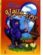

Коты летать не умеют - и это всем известно. Особенно такие большие, чёрные и толстые, как Сорбас. Этот кот живёт себе припеваючи с любимым хозяином и день-деньской любуется на корабли в порту Гамбурга. Но в один прекрасный день Сорбасу приходится выступить в неожиданной для себя роли… мамы! И не для кого-нибудь, а для осиротевшей маленькой чайки. Растить пернатую подопечную Сорбасу помогает целая компания приятелей - портовых котов. Они подходят к воспитанию юной Фортунаты очень ответственно: добывают ей пищу, защищают от крыс и прочих опасностей портовой жизни и даже пытаются обучить искусству полёта. Только ведь коты не умеют летать. Поэтому, чтобы помочь молодой чайке обрести небо, Сорбасу придётся нарушить один очень-очень строгий запрет…